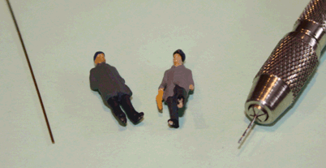
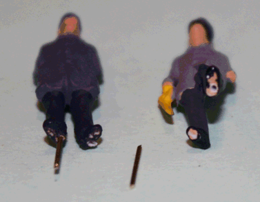

Krümelbahn
KrümelbahnFiguren standsicher befestigen
Leben auf eine Anlage kommt erst durch seine Bevölkerung: Preiser & Co. bieten hier vielfältige Figuren zur Ausgestaltung. Doch wie werden diese gut und vor allem standsicher befestigt?Auf Klarsichtplättchen kleben und aufstellen? Sieht provisorisch aus, umkippen ist vorprogrammiert...
Direkt auf die Anlage kleben? Eine etwas heftigere Berührung und die Figur reißt mit einem Teil der Landschaft ab
Stabilität und Unsichtbarkeit ist gefragt - aber wie?
Hier meine Lösung:
Benötigt werden:
- ein Bohrer Ø 0,5mm mit Klöbchen und
- ein Stückchen Messingdraht Ø 0,5mm

Ein Standbein der Figur wird vorsichtig von unten mit dem Bohrer von Hand aufgebohrt (Figur rechts im Bild), damit der Messingdraht dort eingesetzt werden kann (Figur links im Bild):

Anschließend mit dem gleichen Bohrer ein kleines Loch in die Anlagenplatte bohren - Figur einsetzen - fertig!

Diese und weitere Anlagenausgestaltungen habe ich in
beschrieben.